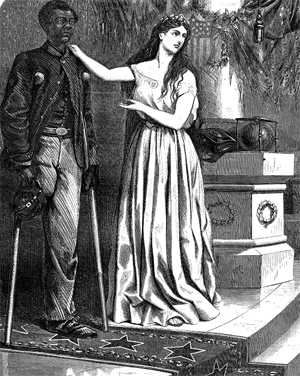

|
The Fifteenth Amendment to the United States Constitution, ratified on March 30,
1870, specifically guaranteed the right to vote to all males regardless of
"race, color, or previous condition of servitude." Section 2 of the Amendment

"The First Vote", published in 1867, takes a positive stance
on black voting; showing representatives from the key sources of African
American leadership; an artisan carrying his tools, a well dressed city-dweller,
and a soldier.
|
also firmly locates the power to enforce this article by appropriate
legislation" in Congress. While Section 2 of the Fourteenth Amendment dealt
with the denial of suffrage, the Fifteenth Amendment made the Congress' position
on African American voting rights more clearly and forcefully.
African Americans began agitating for the right to vote immediately after the
end of the Civil War. Black citizens organized mass meetings, marched in
parades, and signed petitions, insisting that freedom meant suffrage and civic
equality. They went to Washington, D.C. to lobby for suffrage, reminding
Congressmen that those who took up arms in defense of their nation deserve the
right to vote. In the South, black conventions made public their request for
suffrage, and thousands deluged the Freedmen's Bureau, military leaders, and
state officials with petitions and letters.
These protests for black suffrage made little progress at first. Only five
states (all in New England) allowed African American men to vote by the end of
1865 and in those states there were additional qualifications that white males
did not have to meet, for instance, New York had a property requirement.
However, the black codes, racial violence, and an upsurge of unrepentant
Southern nationalism encouraged Congressional Republicans to take Reconstruction
into their own hands and make black suffrage a hallmark of the radical effort.
The attainment of the vote for freedmen seemed to be the answer to several
problems. Some supporters liked the idea because it removed the federal
government from the primary responsibility of providing for the welfare of
African-Americans; while others envisioned black voters as a key Republican
voting bloc, and a barrier to Democratic domination in the South. The challenge
was how to best establish black suffrage.
Republicans recognized the importance of black voters in the election of
1868, in which freedmen participated, thanks to the Fourteenth Amendment.
Without black votes, Ulysses S. Grant would have lost the popular vote. Facing
violence and intimidation from white Democrats, Southern African Americans voted
overwhelmingly for the Republican Party. Constitutional protection of black
suffrage would not only help Republican candidates, but it would also end the
Party's hypocrisy of supporting voting rights in the South, while most Northern
blacks faced racial restrictions on voting rights. In addition, a
constitutional amendment would hopefully establish black political power in the
South.
In its final form, the Fifteenth Amendment was a moderate measure. The
Senate rejected language that would have prohibited discrimination based on
nativity, religion, property, and education, as well as a provision claiming the
right to hold political office. While most states seemed content to allow
|

"And Not This Man," by Thomas Nast, suggests
that it will be impossible to deny the vote to African Americans,
particularly those who served as soldiers. Nearly all Republicans
agreed with this view.
|
African Americans to vote, others wished to keep restrictions on certain
immigrant groups. California, for instance, denied Chinese immigrants the right
to vote.
Reaction to the Amendment was mixed. Ratification was fiercely contested in
the border states, the Midwest, and the mid-Atlantic states. Feminists opposed
ratification and were incensed by the language of abolitionist reformers. "One
question at a time," declared Wendell Phillips, "This hour belongs to the
Negro." By advocating universal manhood suffrage, the amendment implicitly
recognized suffrage discrimination based on sex. Abolitionists were elated by
its results. Constitutional protection for black male voters was almost
unthinkable just five years before. However, the traditional alliance of
abolitionist and feminist reformers permanently split over the ratification of
the Fifteenth Amendment.
Though secured in the Constitution, black suffrage had a short life in the
nineteenth century. Violence and intimidation continued in Southern elections
because the federal government failed to protect black voting rights: with the
rise of "Redemption" governments beginning in the 1870s, Southern states took
steps to systematically disenfranchise black voters through literacy tests, poll
taxes, and other measures. With the end of Reconstruction in 1876-7, white
Democrats were well on their way to once again controlling Southern politics,
and African Americans would not vote again in large numbers in the South until
the late 1960s.
Source: Joan Waugh, ed., Facts on File Encyclopedia of American
History: Civil War and Reconstruction, 1856 to 1869 (New York: Facts on
File, 2003), 123-24.
|